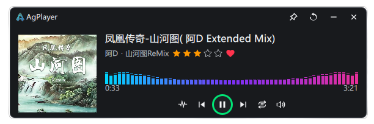
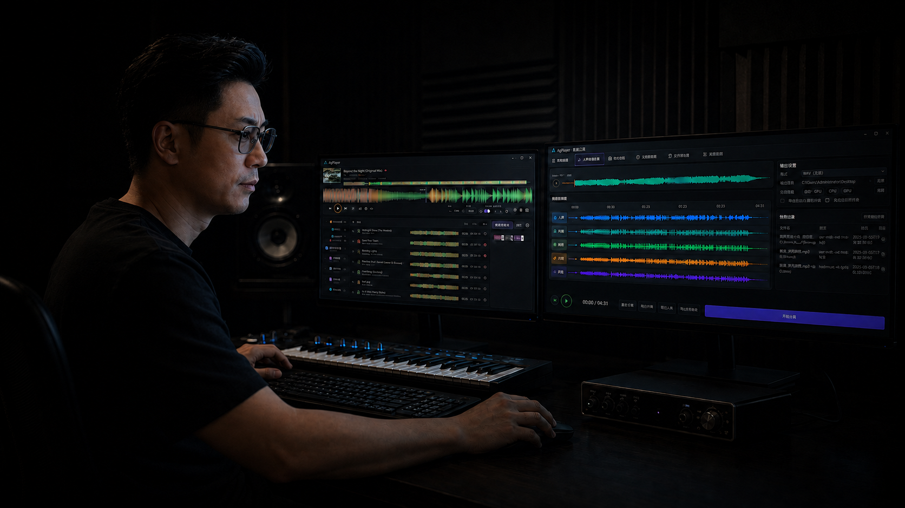

纯色波形
用简洁轮廓呈现振幅起伏，清楚区分已播放与未播放部分。
加速播放、BPM 调整与节拍网格，直观看清音乐节奏。
四种视角，呈现振幅、频率与音乐的动态。
用简洁轮廓呈现振幅起伏，清楚区分已播放与未播放部分。
以不同颜色呈现频段能量，观察低、中、高频的变化。
沿时间轴铺开彩色渐变，保留波形起伏与播放进度。
频谱柱随播放实时变化，直观看见各频段的能量。
仅在浏览器本地读取，不上传音频文件。
网页试听支持的格式取决于浏览器，与桌面播放器可能不同。
从听歌、选段到音频处理，常用能力，一站备齐。
支持 MP3、WAV、FLAC、AAC 等常用格式，专辑曲目自然衔接，聆听不间断。
一键框选波形，将选中片段直接拖到桌面或剪辑软件时间线，选段剪辑更高效。
自由调整播放速度与 BPM，配合大幅滚动波形和节拍网格，看清细节，找准节奏。
经典双窗口、单窗口与专业模式随心切换，支持磁吸组合，迷你窗口置顶不打扰。
用标签、收藏与评分管理歌曲，按歌曲、艺人、评分和 BPM 范围快速定位。
选段、分割、裁剪与淡入淡出，支持升降调和 BPM 调速，试听满意再导出。
分离人声与伴奏，批量转换常用音频格式；工具处理时，音乐仍可正常播放。
批量编辑标题、艺人、专辑与封面，预览并统一整理文件名，让音乐信息更完整。
结合频谱与音频特征，辅助判断音源品质；播放、分析与处理均在本地完成。
持续更新与优化，让每一次聆听与创作更顺手。
所有处理均在本地完成，不影响音乐正常播放。
分离人声与伴奏，专注每一层声音。
音频编辑还支持升降调与 BPM 分析。

小窗口，少占空间；封面、波形与播放控制，精简而完整。

无需账号，让播放、搜索与音频处理留在自己的设备。